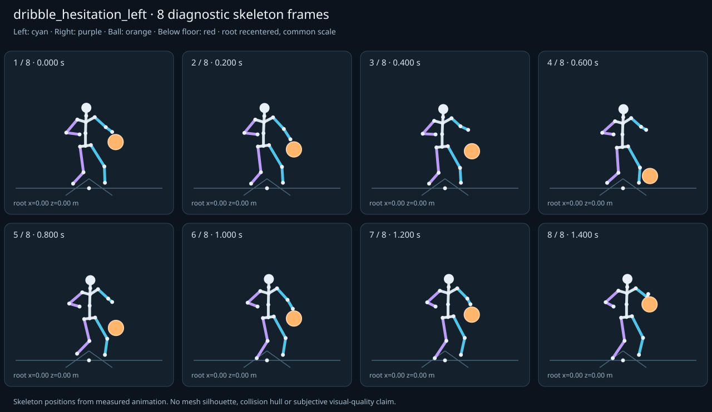

מה הוריד את הציון
- מגע בכדור: חסרים נתוני מדידה (Some declared contacts could not be sampled; partial observations cannot certify the full clip.)
- קפיצות פוזה: LeftHand בזמן 0.3 ש׳; קפיצת סיבוב שקולה 15.0049 מעלות ב־60Hz (צהוב)
- כניסה ויציאה מול המתנה: פער ב־יציאה מול המתנה; יחס חריגה 2.1068 (צהוב)
- סימטריה: mirrored clip pair: הפרש עצמות 0, פער תנועה מנורמל 0.0583 (צהוב)
כיסוי: 86%. לא כל מדד חל על כל קליפ; הסטטוס והראיות מפורטים למטה.
שמונה פריימים
תצוגת שלד אבחונית שנבנתה מהפריימים הנמדדים. צד שמאל בכחול, ימין בסגול, כדור בכתום. מיקום השורש ממורכז לצפייה; מיקומו בעולם כתוב בכל פריים.

המדדים והראיות
| מדד | מצב | ערך | ציון | סף ופרטי מדידה |
|---|---|---|---|---|
| החלקת רגליים | ירוק | 0 height ratio | 100 | {
"definition": {
"label": "החלקת רגליים",
"unit": "height ratio",
"green": 0.01,
"yellow": 0.035,
"weight": 18,
"description": "Maximum horizontal sole displacement from the first sample of each declared support window, divided by character height. Inferred support is used only when no windows were supplied."
},
"value": 0.000046,
"status": "green",
"score": 99.91,
"evidence": {
"coordinateSpace": "authored reference world (simulation-owned)",
"supportSource": "declared",
"windows": 3,
"samples": 150,
"maxDriftMeters": 0.000078,
"p95SpeedMetersPerSecond": 0.001154,
"worst": {
"bone": "RightFoot",
"t": 1.233333,
"start": 0.952,
"end": 1.4,
"driftMeters": 0.000078
}
}
} |
| חדירה לרצפה | ירוק | 0 height ratio | 100 | {
"definition": {
"label": "חדירה לרצפה",
"unit": "height ratio",
"green": 0.005,
"yellow": 0.02,
"weight": 15,
"description": "Maximum depth of the supplied sole probe points and all skeletal joint centers below the declared floor plane, divided by height. Sole probes are not a mesh collision audit."
},
"value": 0.000012,
"status": "green",
"score": 99.95,
"evidence": {
"samples": 1740,
"floorY": 0,
"probeKind": "declared sole probes plus skeletal joint centers (no mesh surfaces)",
"maxDepthMeters": 0.00002,
"worst": {
"t": 0.583333,
"bone": "LeftFoot",
"depthMeters": 0.00002,
"y": -0.00002
}
}
} |
| קפיצות פוזה | צהוב | 1.081 discontinuity ratio | 78 | {
"definition": {
"label": "קפיצות פוזה",
"unit": "discontinuity ratio",
"green": 1,
"yellow": 2.5,
"weight": 18,
"description": "Maximum adjacent 60 Hz-equivalent step: root-relative marker displacement / 0.04 height, root-relative rotation / 15 degrees, or root translation / 0.08 height. A fast continuous action can also exceed this screening threshold."
},
"value": 1.080861,
"status": "yellow",
"score": 78.38,
"evidence": {
"adjacentPairs": 86,
"observations": 1462,
"maxDegrees60Hz": 15.004892,
"maxMarkerStepHeight60Hz": 0.043234,
"maxRootStepHeight60Hz": 0,
"worst": {
"ratio": 1.0808612486484217,
"t": 0.3,
"previousTime": 0.283333,
"bone": "LeftHand",
"markerStepHeight60Hz": 0.043234,
"degrees60Hz": 4.359511
}
}
} |
| חריגות אנטומיות | ירוק | 0 % affected frames | 100 | {
"definition": {
"label": "חריגות אנטומיות",
"unit": "% affected frames",
"green": 0.5,
"yellow": 3,
"weight": 14,
"description": "Percentage of frames with elbow or knee flexion above 165 degrees, neck bend above 80 degrees, or a segment length changing by more than 5%. Optional calibrated hinge checks detect reverse knee flexion above 8 degrees. Conservative marker limits do not diagnose axial joint twist."
},
"value": 0,
"status": "green",
"score": 100,
"evidence": {
"testedFrames": 87,
"affectedFrames": 0,
"checks": 1479,
"maxLimbFlexionDegrees": 125.323068,
"maxRelativeSegmentLengthChange": 0,
"hingeDirectionChecked": true,
"axialTwistChecked": false,
"violations": []
}
} |
| מגע בכדור | אין די נתונים | — height ratio | — | {
"definition": {
"label": "מגע בכדור",
"unit": "height ratio",
"green": 0.015,
"yellow": 0.05,
"weight": 13,
"description": "Maximum absolute distance from the ball surface to the sampled, bone-transformed declared contact point, divided by height. Events are evaluated at their exact declared times by interpolation."
},
"value": null,
"status": "insufficient-data",
"score": null,
"reason": "Some declared contacts could not be sampled; partial observations cannot certify the full clip.",
"evidence": {
"radiusMeters": 0.12,
"samples": 40,
"missed": [
{
"bone": "LeftHand",
"t": 1.4,
"reason": "outside sampled interval"
}
],
"contacts": [
{
"t": 1.15,
"bone": "LeftHand",
"gapMeters": 0.002535,
"signedGapMeters": -0.002535,
"centerDistanceMeters": 0.117465,
"contactPoint": [
0.299355,
0.82153,
0.325767
],
"ballCenter": [
0.312415,
0.705521,
0.312754
],
"declaredLocalPoint": true
},
{
"t": 1.283333,
"bone": "LeftHand",
"gapMeters": 0.000246,
"signedGapMeters": 0.000246,
"centerDistanceMeters": 0.120246,
"contactPoint": [
0.317713,
0.960445,
0.297868
],
"ballCenter": [
0.317585,
0.840201,
0.297246
],
"declaredLocalPoint": true
},
{
"t": 1.25,
"bone": "LeftHand",
"gapMeters": 0.00022,
"signedGapMeters": 0.00022,
"centerDistanceMeters": 0.12022,
"contactPoint": [
0.316462,
0.925696,
0.30169
],
"ballCenter": [
0.316337,
0.805477,
0.300988
],
"declaredLocalPoint": true
},
{
"t": 1.316667,
"bone": "LeftHand",
"gapMeters": 0.000183,
"signedGapMeters": 0.000183,
"centerDistanceMeters": 0.120183,
"contactPoint": [
0.318754,
0.990804,
0.294476
],
"ballCenter": [
0.318651,
0.870622,
0.294046
],
"declaredLocalPoint": true
},
{
"t": 1.216667,
"bone": "LeftHand",
"gapMeters": 0.000116,
"signedGapMeters": 0.000116,
"centerDistanceMeters": 0.120116,
"contactPoint": [
0.315103,
0.889569,
0.305658
],
"ballCenter": [
0.315,
0.769455,
0.305
],
"declaredLocalPoint": true
},
{
"t": 1.35,
"bone": "LeftHand",
"gapMeters": 0.000084,
"signedGapMeters": 0.000084,
"centerDistanceMeters": 0.120084,
"contactPoint": [
0.3195,
1.013822,
0.291855
],
"ballCenter": [
0.319448,
0.893738,
0.291657
],
"declaredLocalPoint": true
},
{
"t": 0.15,
"bone": "LeftHand",
"gapMeters": 0.000073,
"signedGapMeters": -0.000073,
"centerDistanceMeters": 0.119927,
"contactPoint": [
0.283256,
0.786313,
0.341009
],
"ballCenter": [
0.31,
0.672085,
0.316124
],
"declaredLocalPoint": true
},
{
"t": 0.25,
"bone": "LeftHand",
"gapMeters": 0.000064,
"signedGapMeters": -0.000064,
"centerDistanceMeters": 0.119936,
"contactPoint": [
0.28328,
0.768279,
0.344527
],
"ballCenter": [
0.31,
0.653976,
0.31992
],
"declaredLocalPoint": true
},
{
"t": 0.183333,
"bone": "LeftHand",
"gapMeters": 0.000037,
"signedGapMeters": -0.000037,
"centerDistanceMeters": 0.119963,
"contactPoint": [
0.28321,
0.766196,
0.342721
],
"ballCenter": [
0.31,
0.651883,
0.318106
],
"declaredLocalPoint": true
},
{
"t": 0.216667,
"bone": "LeftHand",
"gapMeters": 0.000034,
"signedGapMeters": -0.000034,
"centerDistanceMeters": 0.119966,
"contactPoint": [
0.283242,
0.760879,
0.343925
],
"ballCenter": [
0.31,
0.646536,
0.319402
],
"declaredLocalPoint": true
},
{
"t": 0.083333,
"bone": "LeftHand",
"gapMeters": 0.00003,
"signedGapMeters": 0.00003,
"centerDistanceMeters": 0.12003,
"contactPoint": [
0.283292,
0.844521,
0.336739
],
"ballCenter": [
0.31,
0.730168,
0.311894
],
"declaredLocalPoint": true
},
{
"t": 1.116667,
"bone": "LeftHand",
"gapMeters": 0.000023,
"signedGapMeters": -0.000023,
"centerDistanceMeters": 0.119977,
"contactPoint": [
0.284564,
0.797926,
0.340653
],
"ballCenter": [
0.311349,
0.683615,
0.315954
],
"declaredLocalPoint": true
},
{
"t": 0.116667,
"bone": "LeftHand",
"gapMeters": 0.00002,
"signedGapMeters": -0.00002,
"centerDistanceMeters": 0.11998,
"contactPoint": [
0.283302,
0.815564,
0.338876
],
"ballCenter": [
0.31,
0.701294,
0.313876
],
"declaredLocalPoint": true
},
{
"t": 1.083333,
"bone": "LeftHand",
"gapMeters": 0.000018,
"signedGapMeters": -0.000018,
"centerDistanceMeters": 0.119982,
"contactPoint": [
0.283769,
0.786767,
0.342898
],
"ballCenter": [
0.310552,
0.672419,
0.318343
],
"declaredLocalPoint": true
},
{
"t": 0.05,
"bone": "LeftHand",
"gapMeters": 0.000016,
"signedGapMeters": 0.000016,
"centerDistanceMeters": 0.120016,
"contactPoint": [
0.283246,
0.864681,
0.335216
],
"ballCenter": [
0.31,
0.750305,
0.310598
],
"declaredLocalPoint": true
},
{
"t": 1.383333,
"bone": "LeftHand",
"gapMeters": 0.000011,
"signedGapMeters": 0.000011,
"centerDistanceMeters": 0.120011,
"contactPoint": [
0.319891,
1.026558,
0.290376
],
"ballCenter": [
0.319884,
0.906547,
0.290349
],
"declaredLocalPoint": true
},
{
"t": 1.183333,
"bone": "LeftHand",
"gapMeters": 0.000008,
"signedGapMeters": -0.000008,
"centerDistanceMeters": 0.119992,
"contactPoint": [
0.31374,
0.855126,
0.309534
],
"ballCenter": [
0.313663,
0.735135,
0.309012
],
"declaredLocalPoint": true
},
{
"t": 1.05,
"bone": "LeftHand",
"gapMeters": 0.000002,
"signedGapMeters": 0.000002,
"centerDistanceMeters": 0.120002,
"contactPoint": [
0.283341,
0.789303,
0.344231
],
"ballCenter": [
0.310116,
0.674937,
0.319651
],
"declaredLocalPoint": true
},
{
"t": 0.016667,
"bone": "LeftHand",
"gapMeters": 0.000001,
"signedGapMeters": 0.000001,
"centerDistanceMeters": 0.120001,
"contactPoint": [
0.283227,
0.873043,
0.33461
],
"ballCenter": [
0.31,
0.758667,
0.31008
],
"declaredLocalPoint": true
},
{
"t": 0,
"bone": "LeftHand",
"gapMeters": 0,
"signedGapMeters": 0,
"centerDistanceMeters": 0.12,
"contactPoint": [
0.283227,
0.874375,
0.334527
],
"ballCenter": [
0.31,
0.76,
0.31
],
"declaredLocalPoint": true
}
],
"contactDetailsTruncated": true,
"coordinateSpace": "authored reference world (simulation-owned)",
"observedValue": 0.0015,
"observedStatus": "green",
"observationCoverage": 0.975609756097561
},
"partial": true
} |
| כניסה ויציאה מול המתנה | צהוב | 2.107 continuity ratio | 63 | {
"definition": {
"label": "כניסה ויציאה מול המתנה",
"unit": "continuity ratio",
"green": 1,
"yellow": 3,
"weight": 10,
"description": "Worst entry/exit mismatch to the best matching idle phase: RMS marker error / 0.04 height, RMS bone rotation / 25 degrees, or RMS endpoint velocity error / 0.75 height per second. Horizontal root translation is aligned; root height and body pose remain measurable."
},
"value": 2.106756,
"status": "yellow",
"score": 63.4,
"evidence": {
"entry": {
"ratio": 1.92910868472036,
"t": 0,
"idleTime": 2.2,
"markers": 17,
"rmsPositionHeight": 0.077164,
"rmsRotationDegrees": 41.118962,
"rmsVelocityHeightPerSecond": 0.012858,
"velocityEvaluated": true
},
"exit": {
"ratio": 2.106756477990884,
"t": 1.4,
"idleTime": 0.3,
"markers": 17,
"rmsPositionHeight": 0.08427,
"rmsRotationDegrees": 48.669753,
"rmsVelocityHeightPerSecond": 0.032599,
"velocityEvaluated": true
},
"worstEndpoint": "exit",
"alignment": "horizontal root translation; raw asset poses used when provided"
}
} |
| מהירות גוף מול צעדים | לא חל | — relative speed error | — | {
"definition": {
"label": "מהירות גוף מול צעדים",
"unit": "relative speed error",
"green": 0.2,
"yellow": 0.5,
"weight": 8,
"description": "Relative difference between average root travel speed and the median backward support-foot sweep speed relative to the root. Cadence and implied stride lengths are also reported. In-place clips need an explicit reference travel scenario; stationary actions are not scored as locomotion."
},
"value": null,
"status": "not-applicable",
"score": null,
"reason": "This action is not declared locomotion.",
"evidence": {}
} |
| סימטריה | צהוב | 0.058 relative mismatch | 68 | {
"definition": {
"label": "סימטריה",
"unit": "relative mismatch",
"green": 0.03,
"yellow": 0.1,
"weight": 4,
"description": "Maximum bilateral segment-length mismatch. Looping locomotion additionally compares reflected half-cycle leg markers; explicit pose symmetry compares simultaneous bilateral markers. One-sided actions retain unscored motion diagnostics, so a valid kick or dribble arm is not penalized for intentional asymmetry."
},
"value": 0.058272,
"status": "yellow",
"score": 67.88,
"evidence": {
"mode": "mirrored clip pair",
"modeSource": "structural default for intentional asymmetry",
"structuralMismatch": 0,
"segments": [
{
"segment": "Arm-ForeArm",
"mismatch": 0
},
{
"segment": "ForeArm-Hand",
"mismatch": 0
},
{
"segment": "UpLeg-Leg",
"mismatch": 0
},
{
"segment": "Leg-Foot",
"mismatch": 0
}
],
"motionRmsHeight": 0.058272,
"worstMotion": {
"t": 1.2,
"errorHeight": 0.060858
},
"bilateralPoseRmsHeightUnscored": 0.054965,
"note": "One-sided authored actions are checked for structural symmetry only."
}
} |